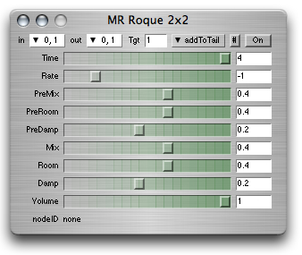

ixiQuarks : Effects

| Effects |
|
The effects are the typical effects that you can think of: Delays, various reverbs, distortion, chorus, octave (pitch shifter), tremolo, equalizer, combvocoder, randompanner, multidelay and various weird effect (lots in development). The effects have an inbus (the audio channel that it listens to) and an outbus (the audio channel that it sends its sound out on). There is normally an effect level and a dry level in each effect, allowing you to mix the original sound out with the effect output. The effects can be added at the head of an audio channel (so it's located at the top of the audio stream) or at the tail of it (where it filters everything that goes through the channel). |